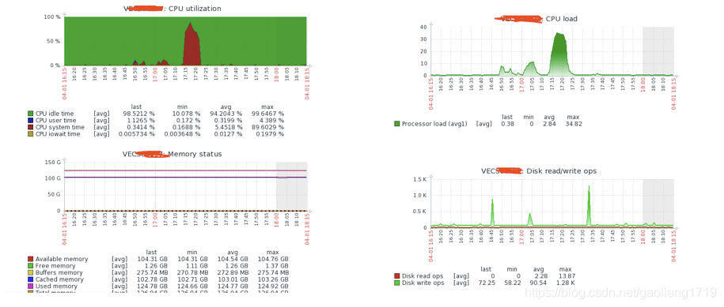
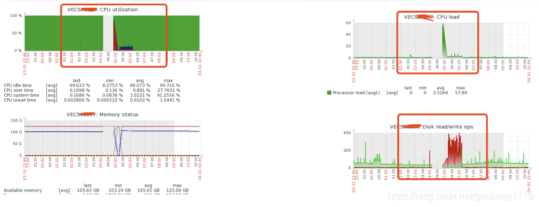
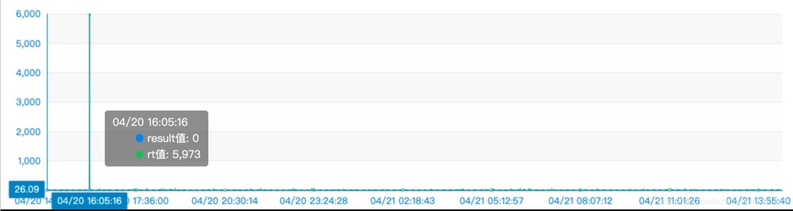
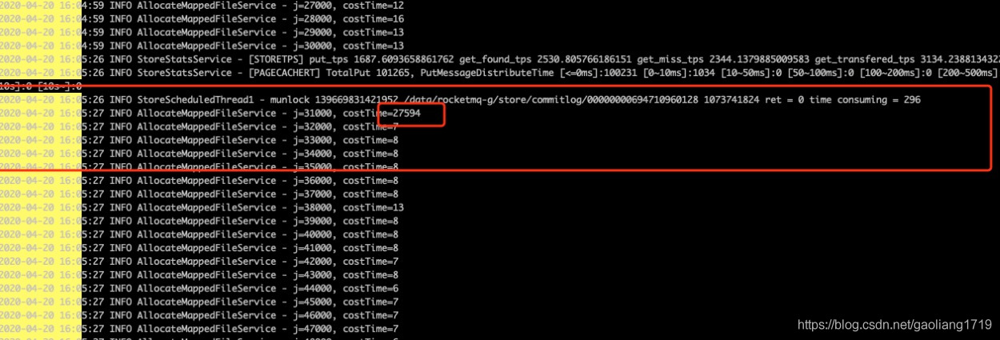
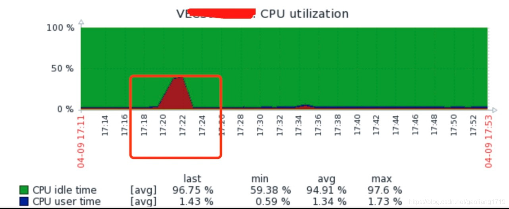
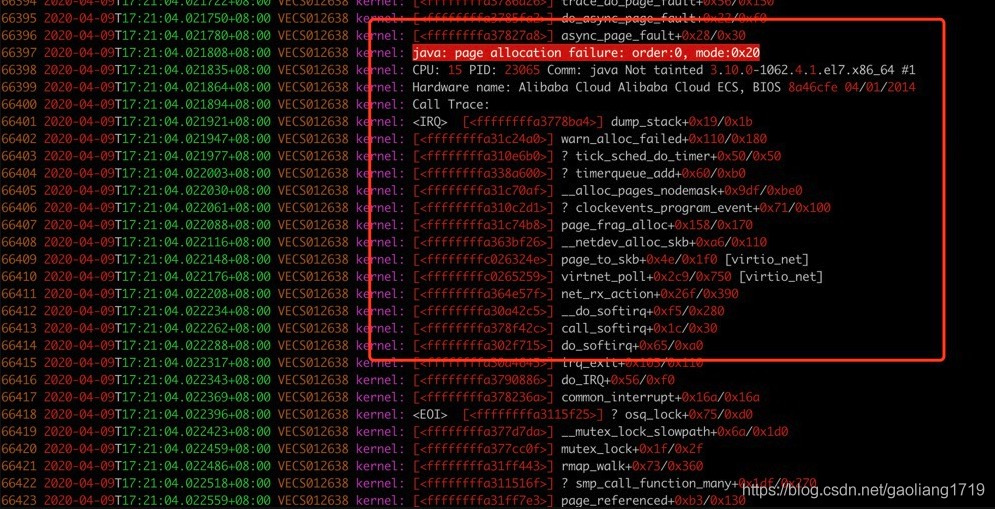
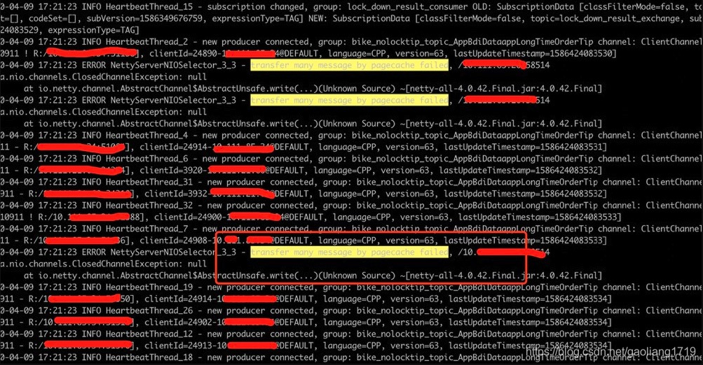
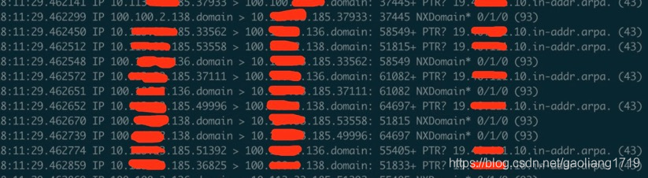
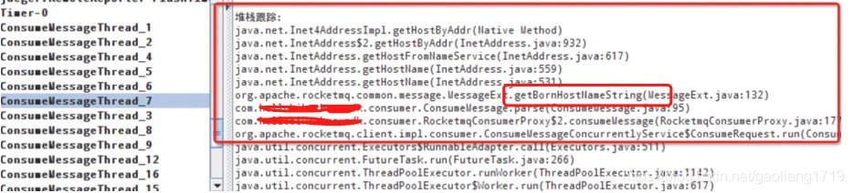

- 01 搭建学习环境准备篇.md.html
- 02 RocketMQ 核心概念扫盲篇.md.html
- 03 消息发送 API 详解与版本变迁说明.md.html
- 04 结合实际应用场景谈消息发送.md.html
- 05 消息发送核心参数与工作原理详解.md.html
- 06 消息发送常见错误与解决方案.md.html
- 07 事务消息使用及方案选型思考.md.html
- 08 消息消费 API 与版本变迁说明.md.html
- 09 DefaultMQPushConsumer 核心参数与工作原理.md.html
- 10 DefaultMQPushConsumer 使用示例与注意事项.md.html
- 11 DefaultLitePullConsumer 核心参数与实战.md.html
- 12 结合实际场景再聊 DefaultLitePullConsumer 的使用.md.html
- 13 结合实际场景顺序消费、消息过滤实战.md.html
- 14 消息消费积压问题排查实战.md.html
- 15 RocketMQ 常用命令实战.md.html
- 16 RocketMQ 集群性能摸高.md.html
- 17 RocketMQ 集群性能调优.md.html
- 18 RocketMQ 集群平滑运维.md.html
- 19 RocketMQ 集群监控（一）.md.html
- 20 RocketMQ 集群监控（二）.md.html
- 21 RocketMQ 集群告警.md.html
- 22 RocketMQ 集群踩坑记.md.html
- 23 消息轨迹、ACL 与多副本搭建.md.html
- 24 RocketMQ-Console 常用页面指标获取逻辑.md.html
- 25 RocketMQ Nameserver 背后的设计理念.md.html
- 26 Java 并发编程实战.md.html
- 27 从 RocketMQ 学基于文件的编程模式（一）.md.html
- 28 从 RocketMQ 学基于文件的编程模式（二）.md.html
- 29 从 RocketMQ 学 Netty 网络编程技巧.md.html
- 30 RocketMQ 学习方法之我见.md.html
22 RocketMQ 集群踩坑记
集群节点进程神秘消失
现象描述
接到告警和运维反馈，一个 RocketMQ 的节点不见了。此类现象在以前从未发生过，消失肯定有原因，开始查找日志，从集群的 broker.log、stats.log、storeerror.log、store.log、watermark.log 到系统的 message 日志没发现错误日志。集群流量出入在正常水位、CPU 使用率、CPU Load、磁盘 IO、内存、带宽等无明显变化。
原因分析
继续查原因，最终通过 history 查看了历史运维操作。发现运维同学在启动 Broker 时没有在后台启动，而是在当前 session 中直接启动了。
sh bin/mqbroker -c conf/broker-a.conf
问题即出现在此命令，当 session 过期时 Broker 节点也就退出了。
解决方法
标准化运维操作，对运维的每次操作进行评审，将标准化的操作实现自动化运维就更好了。
正确启动 Broker 方式：
nohup sh bin/mqbroker -c conf/broker-a.conf &
Master 节点 CPU 莫名飙高
现象描述
RocketMQ 主节点 CPU 频繁飙高后回落，业务发送超时严重，由于两个从节点部署在同一个机器上，从节点还出现了直接挂掉的情况。
主节点 CPU 毛刺截图：

从节点 CPU 毛刺截图：

说明：中间缺失部分为掉线，没有采集到的情况。
系统错误日志一
2020-03-16T17:56:07.505715+08:00 VECS0xxxx kernel: <IRQ> [<ffffffff81143c31>] ? __alloc_pages_nodemask+0x7e1/0x960
2020-03-16T17:56:07.505717+08:00 VECS0xxxx kernel: java: page allocation failure. order:0, mode:0x20
2020-03-16T17:56:07.505719+08:00 VECS0xxxx kernel: Pid: 12845, comm: java Not tainted 2.6.32-754.17.1.el6.x86_64 #1
2020-03-16T17:56:07.505721+08:00 VECS0xxxx kernel: Call Trace:
2020-03-16T17:56:07.505724+08:00 VECS0xxxx kernel: <IRQ> [<ffffffff81143c31>] ? __alloc_pages_nodemask+0x7e1/0x960
2020-03-16T17:56:07.505726+08:00 VECS0xxxx kernel: [<ffffffff8148e700>] ? dev_queue_xmit+0xd0/0x360
2020-03-16T17:56:07.505729+08:00 VECS0xxxx kernel: [<ffffffff814cb3e2>] ? ip_finish_output+0x192/0x380
系统错误日志二
30 2020-03-27T10:35:28.769900+08:00 VECSxxxx kernel: INFO: task AliYunDunUpdate:29054 blocked for more than 120 seconds.
31 2020-03-27T10:35:28.769932+08:00 VECSxxxx kernel: Not tainted 2.6.32-754.17.1.el6.x86_64 #1
32 2020-03-27T10:35:28.771650+08:00 VECS0xxxx kernel: "echo 0 > /proc/sys/kernel/hung_task_timeout_secs" disables this message.
33 2020-03-27T10:35:28.774631+08:00 VECS0xxxx kernel: AliYunDunUpda D ffffffff815592fb 0 29054 1 0x10000080
34 2020-03-27T10:35:28.777500+08:00 VECS0xxxx kernel: ffff8803ef75baa0 0000000000000082 ffff8803ef75ba68 ffff8803ef75ba64
说明：系统日志显示错误“page allocation failure”和“blocked for more than 120 second”错误，日志目录 /var/log/messages。
GC 日志
2020-03-16T17:49:13.785+0800: 13484510.599: Total time for which application threads were stopped: 0.0072354 seconds, Stopping threads took: 0.0001536 seconds
2020-03-16T18:01:23.149+0800: 13485239.963: [GC pause (G1 Evacuation Pause) (young) 13485239.965: [G1Ergonomics (CSet Construction) start choosing CSet, _pending_cards: 7738, predicted base time: 5.74 ms, remaining time: 194.26 ms, target pause time: 200.00 ms]
13485239.965: [G1Ergonomics (CSet Construction) add young regions to CSet, eden: 255 regions, survivors: 1 regions, predicted young region time: 0.52 ms]
13485239.965: [G1Ergonomics (CSet Construction) finish choosing CSet, eden: 255 regions, survivors: 1 regions, old: 0 regions, predicted pause time: 6.26 ms, target pause time: 200.00 ms]
, 0.0090963 secs]
[Parallel Time: 2.3 ms, GC Workers: 23]
[GC Worker Start (ms): Min: 13485239965.1, Avg: 13485239965.4, Max: 13485239965.7, Diff: 0.6]
[Ext Root Scanning (ms): Min: 0.0, Avg: 0.3, Max: 0.6, Diff: 0.6, Sum: 8.0]
[Update RS (ms): Min: 0.1, Avg: 0.3, Max: 0.6, Diff: 0.5, Sum: 7.8]
[Processed Buffers: Min: 2, Avg: 5.7, Max: 11, Diff: 9, Sum: 131]
[Scan RS (ms): Min: 0.0, Avg: 0.0, Max: 0.1, Diff: 0.1, Sum: 0.8]
[Code Root Scanning (ms): Min: 0.0, Avg: 0.0, Max: 0.0, Diff: 0.0, Sum: 0.3]
[Object Copy (ms): Min: 0.2, Avg: 0.5, Max: 0.7, Diff: 0.4, Sum: 11.7]
[Termination (ms): Min: 0.0, Avg: 0.0, Max: 0.0, Diff: 0.0, Sum: 0.3]
[Termination Attempts: Min: 1, Avg: 1.0, Max: 1, Diff: 0, Sum: 23]
[GC Worker Other (ms): Min: 0.0, Avg: 0.2, Max: 0.3, Diff: 0.3, Sum: 3.6]
[GC Worker Total (ms): Min: 1.0, Avg: 1.4, Max: 1.9, Diff: 0.8, Sum: 32.6]
[GC Worker End (ms): Min: 13485239966.7, Avg: 13485239966.9, Max: 13485239967.0, Diff: 0.3]
[Code Root Fixup: 0.0 ms]
[Code Root Purge: 0.0 ms]
[Clear CT: 0.9 ms]
[Other: 5.9 ms]
[Choose CSet: 0.0 ms]
[Ref Proc: 1.9 ms]
[Ref Enq: 0.0 ms]
[Redirty Cards: 1.0 ms]
[Humongous Register: 0.0 ms]
[Humongous Reclaim: 0.0 ms]
[Free CSet: 0.2 ms]
[Eden: 4080.0M(4080.0M)->0.0B(4080.0M) Survivors: 16.0M->16.0M Heap: 4176.5M(8192.0M)->96.5M(8192.0M)]
[Times: user=0.05 sys=0.00, real=0.01 secs]
说明：GC 日志正常。
Broker 错误日志
2020-03-16 17:55:15 ERROR BrokerControllerScheduledThread1 - SyncTopicConfig Exception, x.x.x.x:10911
org.apache.rocketmq.remoting.exception.RemotingTimeoutException: wait response on the channel <x.x.x.x:10909> timeout, 3000(ms)
at org.apache.rocketmq.remoting.netty.NettyRemotingAbstract.invokeSyncImpl(NettyRemotingAbstract.java:427) ~[rocketmq-remoting-4.5.2.jar:4.5.2]
at org.apache.rocketmq.remoting.netty.NettyRemotingClient.invokeSync(NettyRemotingClient.java:375) ~[rocketmq-remoting-4.5.2.jar:4.5.2]
说明：通过查看 RocketMQ 的集群和 GC 日志，只能说明但是网络不可用，造成主从同步问题；并未发现 Broker 自身出问题了。
原因分析
系统使用 CentOS 6，内核版本为 2.6。通过摸排并未发现 broker 和 GC 本身的问题，却发现了系统 message 日志有频繁的“page allocation failure”和“blocked for more than 120 second”错误。所以将目光聚焦在系统层面，通过尝试系统参数设置，例如：min_free_kbytes 和 zone_reclaim_mode，然而并不能消除 CPU 毛刺问题。通过与社区朋友的会诊讨论，内核版本 2.6 操作系统内存回收存在 Bug。我们决定更换集群的操作系统。
解决办法
将集群的 CentOS 6 升级到 CentOS 7，内核版本也从 2.6 升级到了 3.10，升级后 CPU 毛刺问题不在乎出现。升级方式采取的方式先扩容后缩容，先把 CentOS 7 的节点加入集群后，再将 CentOS 6 的节点移除，详见前面实战部分“RocketMQ 集群平滑运维”。
Linux version 3.10.0-1062.4.1.el7.x86_64 ([email protected]) (gcc version 4.8.5 20150623 (Red Hat 4.8.5-39) (GCC) ) #1 SMP Fri Oct 18 17:15:30 UTC 2019
集群频繁抖动发送超时
现象描述
监控和业务同学反馈发送超时，而且频繁出现。具体现象如下图。
预热现象


说明：上图分别为开启预热时（warmMapedFileEnable=true）集群的发送 RT 监控、Broker 开启预热设置时的日志。
内存传输现象



说明：上图分别为开启堆外内存传输（transferMsgByHeap=false）时的 CPU 抖动截图、系统内存分配不足截图、Broker 日志截图。
原因分析
上面展现的两种显现均会导致集群 CPU 抖动、客户端发送超时，对业务造成影响。
预热设置：在预热文件时会填充 1 个 G 的假值 0 作为占位符，提前分配物理内存，防止消息写入时发生缺页异常。然而往往伴随着磁盘写入耗时过长、CPU 小幅抖动、业务具体表现为发送耗时过长，超时错误增多。关闭预热配置从集群 TPS 摸高情况来看并未有明显的差异，但是从稳定性角度关闭却很有必要。
堆外内存：transferMsgByHeap 设置为 false 时，通过堆外内存传输数据，相比堆内存传输减少了数据拷贝、零字节拷贝、效率更高。但是可能造成堆外内存分配不够，触发系统内存回收和落盘操作，设置为 true 时运行更加平稳。
解决办法
预热 warmMapedFileEnable 默认为 false，保持默认即可。如果开启了，可以通过热更新关闭。
bin/mqadmin updateBrokerConfig -b x.x.x.x:10911 -n x.x.x.x:9876 -k warmMapedFileEnable -v false
内存传输参数 transferMsgByHeap 默认为 true（即：通过堆内内存传输）保持默认即可。如果关闭了，可以通过热更新开启。
bin/mqadmin updateBrokerConfig -b x.x.x.x:10911 -n x.x.x.x:9876 -k transferMsgByHeap -v true
用了此属性消费性能下降一半
现象描述
配置均采用 8C16G，RocketMQ 的消费线程 20 个，通过测试消费性能在 1.5 万 tps 左右。通过 tcpdump 显示在消费的机器存在频繁的域名解析过程；10.x.x.185 向 DNS 服务器 100.x.x.136.domain 和 10.x.x.138.domain 请求解析。而 10.x.x.185 这台机器又是消息发送者的机器 IP，测试的发送和消费分别部署在两台机器上。
问题：消费时为何会有消息发送方的 IP 呢？而且该 IP 还不断进行域名解析。

原因分析
通过 dump 线程堆栈，如下图：

代码定位：在消费时有通过 MessageExt.bornHost.getBornHostNameString 获取消费这信息。
public class MessageExt extends Message {
private static final long serialVersionUID = 5720810158625748049L;
private int queueId;
private int storeSize;
private long queueOffset;
private int sysFlag;
private long bornTimestamp;
private SocketAddress bornHost;
private long storeTimestamp;
private SocketAddress storeHost;
private String msgId;
private long commitLogOffset;
private int bodyCRC;
private int reconsumeTimes;
private long preparedTransactionOffset;
}
调用 GetBornHostNameString 获取 HostName 时会根据 IP 反查 DNS 服务器：
InetSocketAddress inetSocketAddress = (InetSocketAddress)this.bornHost;
return inetSocketAddress.getAddress().getHostName();
解决办法
消费的时候不要使用 MessageExt.bornHost.getBornHostNameString 即可，去掉该属性，配置 8C16G 的机器消费性能在 3 万 TPS，提升了 1 倍。